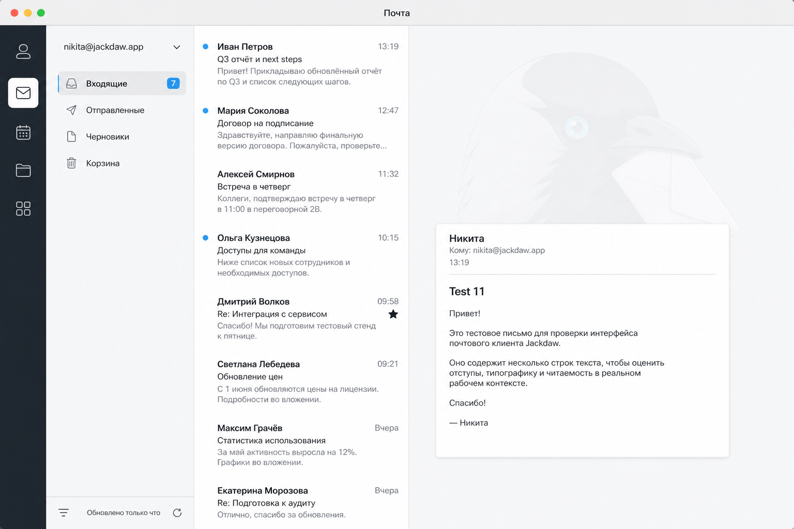
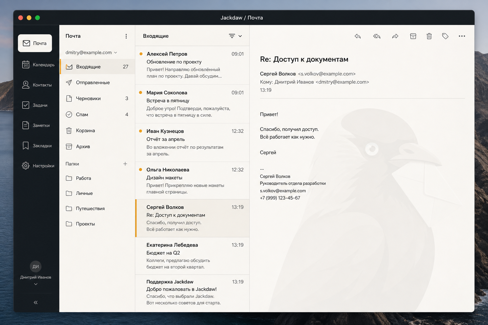
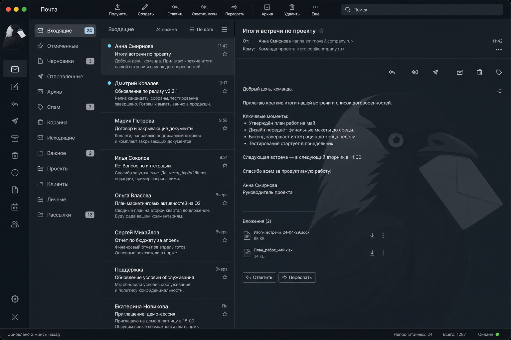
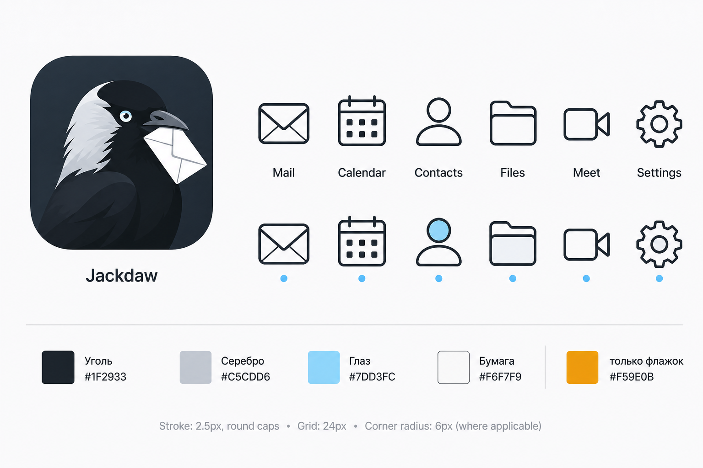

Три окна почты и лист иконок. Клик по картинке открывает оригинал.
Светлая плотная почта. Акцент — голубой глаз галки. Подложка-иконка в панели чтения.

Тёмная рама, внутри бумага. Янтарь только засечкой у выбранной строки. Галка в правой панели.

Угольный клиент. Выделение серебром затылка, непрочитанное — глазом. Крупная подложка справа.

Та же галка, линейные иконки, уголь / серебро / глаз. Янтарь только для флажка.
